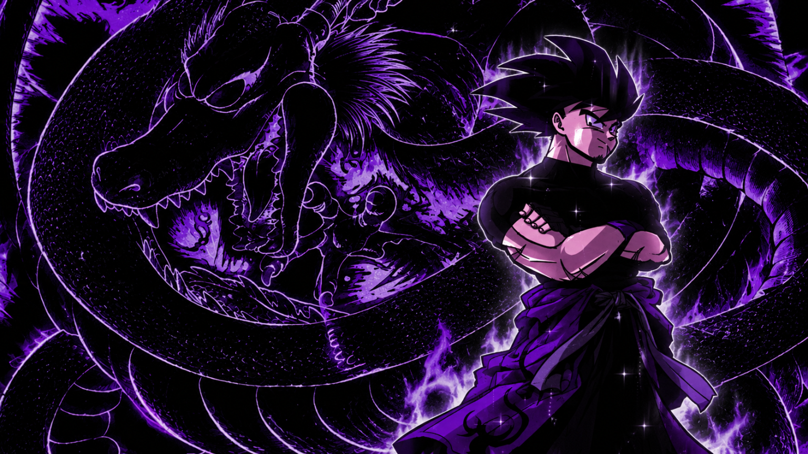

A NEW LEGACY BEGINS
DRAGON BALL
FALLEN LEGACY
Beyond every ending, a legend remains.
Enter a world shaped by finality, impossible power, and a Goku whose existence stands beyond every boundary.

001 / THE FINALITYFALLEN LEGACY GOKU
AN ORIGINAL FAN-MADE PROJECTSCROLL TO DISCOVER ↓
THE PROJECT
A story that
reaches beyond.
Dragon Ball: Fallen Legacy is an original fan-made concept exploring a new interpretation of Goku and the world surrounding him.
Discover the story →CHARACTER FILE 001